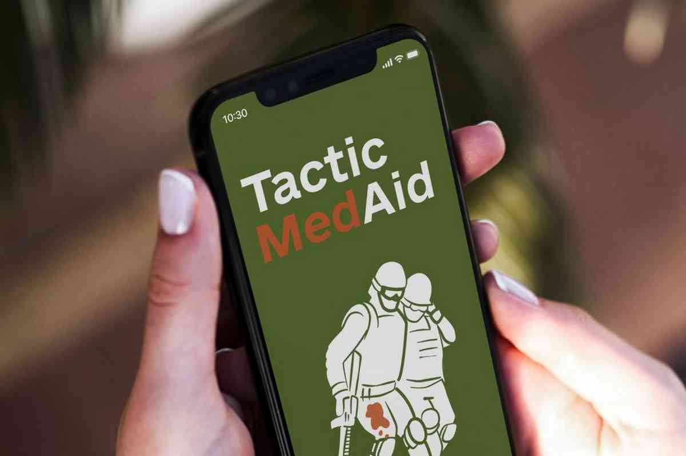
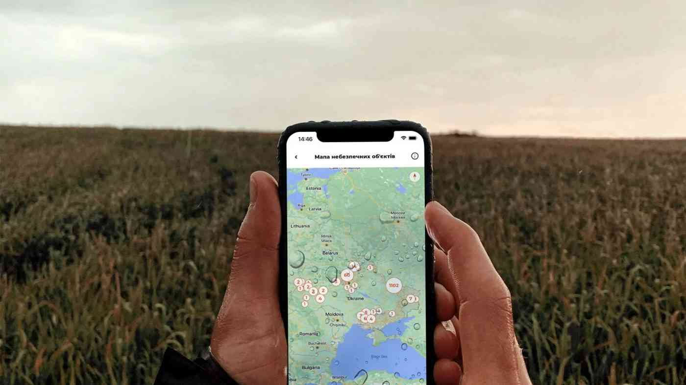

Dobre
Якщо ваші рідні живуть в іншому місті, перебувають у зоні бойових дій чи опинилися під окупацією — виникає потреба стабільно бути на зв’язку. Хвилюватися за таких обставин — нормальна реакція, але можна і варто зменшувати кількість переживань. З цим допоможе застосунок Dobre, який дозволяє перевіряти статус близьких навіть при поганому інтернет-з’єднанні.
Після встановлення додатка користувач обирає собі ім’я та вказує статус зони проживання (безпечне чи небезпечне місце). У разі небезпеки застосунок щогодини питатиме у людини, чи все гаразд. Якщо користувач вчасно не вказує, що все добре, застосунок сповістить про це всі контакти, додані до списку близьких. Крім того, розробники обіцяють додавати у Dobrе нові функції. Наприклад, геолокацію чи персональні запити.
Завантажити Dobre:
Android
TacticMedAid
Команда TacticMedAid зібрала навколо себе справжніх спеціалістів, які навчають рятувати життя військових та цивільних в умовах бойових дій. У застосунку TacticMedAid ви зокрема дізнаєтесь, як зупинити кровотечу та як діяти, якщо людина поруч із вами знепритомніла або отримала опіки.
Крім додатка, творці проєкту радять переглянути їхній YouTube з лекційним матеріалом та доєднатися до телеграм-каналу. Довідкову інформацію по протоколу з тактичної медицини можна отримати у телеграм-боті TacticMedAid.
Завантажити TacticMedAid:
Android
Helsi
Застосунок Helsi подбає про ваше здоров’я у надскладний воєнний час. Встановивши цей додаток, ви зможете звернутися за безкоштовною онлайн-консультацією до лікаря, навіть якщо він працює у приватній клініці. Обрати лікаря можна за рейтингом, відгуками й стажем. Декларація зі спеціалістом чи направлення не потрібні.
У додатку ви створюєте особистий кабінет, де зберігатимуться усі ваші медичні дані. З корисних функцій Helsi — встановлення нагадування про прийом препаратів. Також за допомогою цього сервісу зручно шукати й бронювати ліки зі знижками у найближчих аптеках. Якщо ви вже маєте Helsi на своєму смартфоні, не забувайте періодично оновлювати застосунок. Нещодавно розробники додали можливість замовляти антибіотики, виписані лікарем, одразу з електронного рецепта.
Завантажити Helsi:
AndroidЯк і попередній ресурс, чат-бот StopRussia | MRIYA допомагає боротися з окупантами на інформаційному фронті. За допомогою цього бота можна заблокувати телеграм- та ютуб-канали, сторінки на фейсбуці чи в інстаграмі, що поширюють дезінформацію. Модератори команди StopRussia | MRIYA перевіряють повідомлення на достовірність і відправляють їх на блокування колегам.
SpyBuster – це застосунок від українських айтівців із команди MacPaw. Додаток виконує одразу дві функції – сканує пристрій на наявність встановлених програм, які мають зв’язки з РФ чи РБ, і відстежує, чи надсилаються дані на російські чи білоруські сервери. Завдяки цьому SpyBuster можна виявити та заблокувати з’єднання додатків і вебсторінок із серверами в цих двох країнах.
У 2022 році українці довели одне одному, наскільки важливою є підтримка і взаємодопомога. А разом із сміливістю ми продемонстрували неабияку винахідливість — кількість корисних застосунків, що з’явилася впродовж повномасштабної війни, дійсно вражає!
Zrada
Ціль роботи цього застосунку — бойкот товарів, які так чи інакше пов’язані з російською економікою. Наприклад, товари, які виготовляються у країні-агресорці, чи товари міжнародних компаній, які продовжують працювати на російському ринку.
Розібратися у застосунку дуже просто: ви скануєте штрих-код товару, після чого Zrada видає актуальну інформацію про компанію-виробника та її зв’язок з економікою росії.
Додаток Zrada — справжня знахідка для тих, хто залишається не бажає спонсорувати тероризм.
Завантажити Zrada:
AndroidMinefree
На сьогодні Україна є країною з найбільшою кількістю мін у світі, повідомляє ООН. І хоча наші рятувальники щодня знешкоджують тисячі снарядів, вміння правильно поводитися на «забрудненій» території є необхідністю. Що робити, якщо ви побачили міну? Та як зрозуміти, чи є вибухонебезпечні предмети поруч із вами? На ці питання відповідає додаток MineFree.
Застосунок вказує на карті потенційно небезпечні території. При наближенні до об’єкта, попередньо ідентифікованого рятувальниками, застосунок попередить вас про загрозу за допомогою текстового повідомлення та аудіосповіщення. Ще MineFree пропонує переглянути довідник ДСНС з описом і фото вибухонебезпечних предметів.
Завантажити MineFree:
Android Bachu
Допомогти боротися ЗСУ з окупантами може кожен, завантаживши додаток Bachu. Якщо ви маєте інформацію про пересування ворожої техніки та військ — поширте її за допомогою цього застосунку. Не хвилюйтеся, якщо у вас немає інтернету. Створити повідомлення можна без нього, а вже коли приєднаєтесь до зв’язку, інформація відправиться на чат-бот СБУ автоматично.
Роблячи фото техніки, слід упевнитися у тому, що вона дійсно ворожа. Перелік позначок на зброї ворога також доступний у Bachu.
Завантажити Bachu:
AndroidMdicalCar
Бот Джгут 2.0. Перша допомога стане вашим помічником за обставин, коли необхідно надати першу медичну допомогу. Ви дізнаєтеся, як діяти при втраті свідомості, інфаркті, інсульті, зупинці серця, епілептичному нападі тощо.
Цей бот буде корисним як для тих, хто вже проходив тренінг із домедичної допомоги, так і для тих, хто досі не встиг цього зробити. Інтерактивні інструкції, що надсилатимуться на ваш телеграм, дуже прості для сприйняття. Пам’ятайте, що правильне та вчасне надання першої допомоги може врятувати життя людини.
Запустити бот:
Android